【论文汉译】粒子系统 by William T.Reeves
免责声明
本文章为 William T.Reeves 在1983年于期刊 ACM Transactions on Graphics 发表的文章 Particle Systems A Technique for Modeling a Class of Fuzzy Objects 的个人汉译，翻译过程中使用了电子词典等辅助工具，仅供学习交流使用，严禁转载。
原文版权声明
Author’s address: William T. Reeves, Lucasfilm Ltd, P.O. Box 2009, San Rafael, CA 94912. Permission to copy without fee all or part of this material is granted provided that the copies are not made or distributed for direct commercial advantage, the ACM copyright notice and the title of the publication and its date appear, and notice is given that copying is by permission of the Association for Computing Machinery. To copy otherwise, or to republish, requires a fee and/or specific permission.
© ACM 0-89791-109-1/83/007/0359
原文
Particle Systems A Technique for Modeling a Class of Fuzzy Objects
WILLIAM T. REEVES Lucasfilm Ltd
This paper introduces particle systems–a method for modeling fuzzy objects such as fire, clouds, and water. Particle systems model an object as a cloud of primitive particles that define its volume. Over a period of time, particles are generated into the system, move and change form within the system, and die from the system. The resulting model is able to represent motion, changes of form, and dynamics that are not possible with classical surface-based representations. The particles can easily be motion blurred, and therefore do not exhibit temporal aliasing or strobing. Stochastic processes are used to generate and control the many particles within a particle system. The application of particle systems to the wall of fire element from the Genesis Demo sequence of the film Star Trek II: The Wrath of Khan [10] is presented.
Categories and Subject Descriptors: I.3.3 [Computer Graphics]: Picture/Image Generation; I.3.5 [Computer Graphics]: Computational Geometry and Object Modeling; I.3.7 [Computer Graphics]: Three-Dimensional Graphics and Realism
General Terms: Algorithms, Design
Additional Key Words and Phrases: Motion blur, stochastic modeling, temporal aliasing, dynamic objects
1. INTRODUCTION
Modeling phenomena such as clouds, smoke, water, and fire has proved difficult with the existing techniques of computer image synthesis. These “fuzzy” objects do not have smooth, well-defined, and shiny surfaces; instead their surfaces are irregular, complex, and ill defined. We are interested in their dynamic and fluid changes in shape and appearance. They are not rigid objects nor can their motions be described by the simple affine transformations that are common in computer graphics.
This paper presents a method for the modeling of fuzzy objects that we call particle systems. The representation of particle systems differs in three basic ways from representations normally used in image synthesis. First, an object is represented not by a set of primitive surface elements, such as polygons or patches, that define its boundary, but as clouds of primitive particles that define its volume. Second, a particle system is not a static entity. Its particles change form and move with the passage of time. New particles are “born” and old particles “die.” Third, an object represented by a particle system is not deterministic, since its shape and form are not completely specified. Instead, stochastic processes are used to create and change an object’s shape and appearance.
In modeling fuzzy objects, the particle system approach has several important advantages over classical surface-oriented techniques. First, a particle (for now, think of a particle as a point in three-dimensional space) is a much simpler primitive than a polygon, the simplest of the surface representations. Therefore, in the same amount of computation time one can process more of the basic primitives and produce a more complex image. Because a particle is simple, it is also easy to motion-blur. Motion-blurring of fast-moving objects for the removal of temporal aliasing effects has been largely ignored in computer image synthesis to date. A second advantage is that the model definition is procedural and is controlled by random numbers. Therefore, obtaining a highly detailed model does not necessarily require a great deal of human design time as is often the case with existing surface-based systems. Because it is procedural, a particle system can adjust its level of detail to suit a specific set of viewing parameters. As with fractal surfaces [5], zooming in on a particle system can reveal more and more detail. Third, particle systems model objects that are “alive,” that is, they change form over a period of time. It is difficult to represent complex dynamics of this form with surface-based modeling techniques.
Modeling objects as collections of particles is not a new idea. Fifteen years ago, the earliest computer video games depicted exploding spaceships with many little glowing dots that filled the screen. Point sources have been used as a graphics data type in many three-dimensional modeling systems (e.g., the early Evans and Sutherland flight simulators), although there are few real references to them in the literature. Roger Wilson at Ohio State [4] used particles to model smoke emerging from a smokestack. There were neither stochastic controls nor dynamics in his model. Alvy Ray Smith and Jim Blinn used particles to model star creation and death in galaxies for the Cosmos series [11]. Alan Norton [9] used particles to generate and display three-dimensional fractal shapes. Jim Blinn [3] discussed light reflection functions for simulating light passing through and being reflected by layers of particles. His technique was used to produce images of the rings of Saturn. Blinn did not address the fuzzy object modeling problem which is the topic of this paper. Volumetric representations have also been proposed as viable alternatives to surface representations. Solid modeling [ 13] is a form of volumetric representation, as is the work of Norm Badler and Joe O’Rourke on “bubbleman” [2]. The use of stochastic modeling relates our work to the recent advances in fractal modeling [5].
Section 2 decribes the basic framework of particle systems in more detail. Section 3 examines how particle systems were used to produce the fire element in the Genesis Demo sequence from the movie Star Trek II: The Wrath of Khan [10]. Section 4 presents several other applications of particle systems, and Section 5 discusses ongoing and future research in this area.
2. BASIC MODEL OF PARTICLE SYSTEMS
A particle system is a collection of many minute particles that together represent a fuzzy object. Over a period of time, particles are generated into a system, move and change from within the system, and die from the system.
To compute each frame in a motion sequence, the following sequence of steps is performed: (1) new particles are generated into the system, (2) each new particle is assigned its individual attributes, (3) any particles that have existed within the system past their prescribed lifetime are extinguished, (4) the remaining particles are moved and transformed according to their dynamic attributes, and finally (5) an image of the living particles is rendered in a frame buffer. The particle system can be programmed to execute any set of instructions at each step. Because it is procedural, this approach can incorporate any computational model that describes the appearance or dynamics of the object. For example, the motions and transformations of particles could be tied to the solution of a system of partial differential equations, or particle attributes could be assigned on the basis of statistical mechanics. We can, therefore, take advantage of models which have been developed in other scientific or engineering disciplines.
In the research presented here, we use simple stochastic processes as the procedural elements of each step in the generation of a frame. To control the shape, appearance, and dynamics of the particles within a particle system, the model designer has access to a set of parameters. Stochastic processes that randomly select each particle’s appearance and movement are constrained by these parameters. In general, each parameter specifies a range in which a particle’s value must lie. Normally, a range is specified by providing its mean value and its maximum variance.
The following subsections describe in more detail the basic model for particle systems, and how they are controlled and specified within the software we have written.
2.1 Particle Generation
Particles are generated into a particle system by means of controlled stochastic processes. One process determines the number of particles entering the system during each interval of time, that is, at a given frame. The number of particles generated is important because it strongly influences the density of the fuzzy object.
The model designer can choose to control the number of new particles in one of two ways. In the first method, the designer controls the mean number of particles generated at a frame and its variance. The actual number of particles generated at frame $ f $ is
$$ NParts_f = MeanParts_f + Rand() \times VarParts_f, $$
where $ Rand $ is a procedure returning a uniformly distributed random number between -1.0 and + 1.0, $ MeanParts_f $ the mean number of particles, and $ VarParts_f $ its variance.
In the second method, the number of new particles depends on the screen size of the object. The model designer controls the mean number of particles generated per unit of screen area and its variance. The procedural particle system can determine the view parameters at a particular frame, calculate the approximate screen area that it covers, and set the number of new particles accordingly. The corresponding equation is
$$ NParts_f = (MeanParts_{sa_f} + Rand() \times VarParts_{sa_f}) \times ScreenArea, $$
where $ MeanParts_{sa} $ is the mean per screen area, $ VarParts_{sa_f} $ its variance, and $ ScreenArea $ the particle system’s screen area. This method controls the level of detail of the particle system and, therefore, the time required to render its image. For example, there is no need to generate 100,000 particles in an object that covers 4 pixels on the screen.
To enable a particle system to grow or shrink in intensity, the designer is able to vary over time the mean number of particles generated per frame (i.e., $ MeanParts_f $ and $ MeanParts_{sa_f} $ are, as used above, functions of frame number). Currently, we use a simple linear function
$$ MeanParts_f = InitialMeanParts + DeltaMeanParts \times (f - f_0) $$
or
$$ MeanParts_{sa_f} = InitialMeanParts_{sa} + DeltaMeanParts_{sa} \times (f - f_0), $$
where $ f $ is the current frame, $ f_0 $ the first frame during which the particle system is alive, $ InitialMeansParts $ the mean number of particles at this first frame, and $ VarParts_{sa_f} $ its rate of change. The variance controls, $ VarParts_f $ and $ VarParts_{sa_f} $, are currently constant over all frames. More sophisticated quadratic,
cubic, or perhaps even stochastic variations in both the mean and variance parameters would be easy to add.
To control the particle generation of a particle system, therefore, the designer specifies $ f_0 $ and either the parameters $ InitialMeanParts $ , $ DeltaMeanParts $ , and $ VarParts $, or the parameters $ InitialMeanParts_{sa} $ , $ DeltaMeanParts_{sa} $ , and $ VarParts_{sa} $.
2.2 Particle Attributes
For each new particle generated, the particle system must determine values for the following attributes:
(1) initial position,
(2) initial velocity (both speed and direction),
(3) initial size,
(4) initial color,
(5) initial transparency,
(6) shape,
(7) lifetime.
Several parameters of a particle system control the initial position of its particles. A particle system has a position in three-dimensional space that defines its origin. Two angles of rotation about a coordinate system through this origin give it an orientation. A particle system also has a generation shape which defines a region about its origin into which newly born particles are randomly placed. Among the generation shapes we have implemented are: a sphere of radius $ r $, a circle of radius $ r $ in the $ x-y $ plane of its coordinate system, and a rectangle of length $ l $ and width $ w $ in the $ x-y $ plane of its coordinate system. Figure 1 shows a typical particle system with a spherical generation shape. More complicated generation shapes based on the laws of nature or on chaotic attractors [1] have been envisioned but not yet implemented.
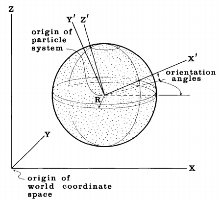
The generation shape of a particle system also describes the initial direction in which new particles move. In a spherical generation shape, particles move outward away from the origin of the particle system. In a circular or rectangular shape, particles move upward from the $ x-y $ plane, but are allowed to vary from the vertical according to an “ejection” angle, which is another parameter (see Figure 3). The initial speed of a particle is determined by
$$ InitialSpeed = MeanSpeed + Rand() \times VarSpeed, $$
where $ MeanSpeed $ and $ VarSpeed $ are two other parameters of the particle system, the mean speed and its variance.
To determine a particle’s initial color, a particle system is given an average color,$ ^1 $ and the maximum deviation from that color. Particle transparency and particle size are also determined by mean values and maximum variations. The equations are similar to the one given above for initial speed.
A particle system has a parameter that specifies the shape of each of the particles it generates. The particle shapes implemented so far are spherical, rectangular, and streaked spherical. The latter is used to motion-blur particles– a very important feature when modeling fast-moving objects. We discuss streaking particles in more detail in Sections 2.5 and 3.
The number of possible attribute control parameters and their variants is endless. We are presenting those that we have found to be most useful and interesting.
2.3 Particle Dynamics
Individual particles within a particle system move in three-dimensional space and also change over time in color, transparency, and size.
To move a particle from one frame to the next is a simple matter of adding its velocity vector to its position vector. To add more complexity, a particle system also uses an acceleration factor to modify the velocity of its particles from frame to frame. With this parameter the model designer can simulate gravity and cause particles to move in parabolic arcs rather than in straight lines.
A particle’s color changes over time as prescribed by the rate-of-color-change parameter. The transparency and size of particles are controlled in exactly the same way. In our implementation, these rates of change are global for all particles in a particle system, but one can easily imagine making this parameter stochastic too.
2.4 Particle Extinction
When it is generated, a particle is given a lifetime measured in frames. As each frame is computed, this lifetime is decremented. A particle is killed when its lifetime reaches zero.
Other mechanisms, if enabled, arrange for particles to be killed because they can contribute nothing to the image. If the intensity of a particle, calculated from its color and transparency, drops below a specified threshold, the particle is killed. A particle that moves more than a given distance in a given direction from the origin of its parent particle system may also be killed. This mechanism can be used to clip away particles that stray outside a region of interest.$ ^2 $
2.5 Particle Rendering
Once the position and appearance parameters of all particles have been calculated for a frame, the rendering algorithm makes a picture. The general particle rendering problem is as complicated as the rendering of objects composed of the more common graphical primitives, such as polygons and curved surfaces. Particles can obscure other particles that are behind them in screen depth. They can be transparent and can cast shadows on other particles. Furthermore, particles can coexist in a scene with objects modeled by surface-based primitives, and these objects can intersect with the particles.
In our existing system, two assumptions allow us to simplify the rendering algorithm. First, we assume that particle systems do not intersect with other surface-based modeling primitives, and hence our rendering algorithm need only handle particles. Objects modeled using other techniques are composited together with particle system objects in a postrendering compositing stage. In order for a particle system to intersect or be behind other objects, the rendering system will split the image of a particle system into subimages based on clipping planes defined in the model coordinate space. These subimages are then combined with other images in the compositing stage.
The other simplifying assumption made in our current rendering system is that each particle can be displayed as a point light source. With this assumption,determining hidden surfaces is no longer a problem. Each particle adds a bit of light to the pixels that it covers. A particle behind another particle is not obscured but rather adds more light to the pixels covered. The amount of light added, and its color depend on the particle’s transparency and color. Currently, the amount of light added does not depend on the distance between the particle and the viewing position, but that would be an easy extension. The viewing transformation, the particle’s size, and its shape determine which pixels are covered. All particle shapes are drawn antialiased in order to prevent temporal aliasing and strobing. Light may be added to a pixel by many particles, so the rendering algorithm clamps the individual red, green, and blue intensities at the maximum intensity value of the frame buffer instead of letting them wrap around.
With this algorithm and assumptions, no sorting of the particles is needed. They are rendered into the frame buffer in whatever order they are generated. Shadows’are no longer a problem, since particles do not reflect but emit light.
2.6 Particle Hierarchy
Our system has a mechanism that supports the formation and control of particle system hierarchies. The model designer creates a particle system in which the particles are themselves particle systems. When the parent particle system is transformed, so are all of its descendant particle systems and their particles. The parent particle system’s mean color and its variance are used to select the mean color and variance of the offspring particle systems using the same equations presented earlier. The number of new particle systems generated at a frame is based on the parent’s particle generation rate. The other parameters of the parent similarly affect those of its children. The data structure used to represent the hierarchy is a tree.
A hierarchy can be used to exert global control on a complicated fuzzy object that is composed of many particle systems. For example, a cloud might be composed of many particle systems, each representing a billowing region of water particles. A parent particle system could group these all together and control the cloud’s global movement and appearance as influenced by the wind and terrain.
3. USING PARTICLE SYSTEMS TO MODEL A WALL OF FIRE AND EXPLOSIONS
The Genesis Demo sequence [14] from the movie Star Trek II: The Wrath of Khan [10] was generated by the Computer Graphics project of Lucasfilm Ltd. The sequence depicts the transformation of a dead, moonlike planet into a warm, earthlike planet by an experimental device called the Genesis bomb. In a computer-simulated demonstration, the bomb hits the planet’s surface and an expanding wall of fire spreads out from the point of impact to eventually “cleanse” the entire planet. The planet’s surface begins to buckle, mountains grow, and oceans, vegetation, and an atmosphere form to produce an earthlike environment.
The wall-of-fire element in the Genesis Demo was generated using a two-level hierarchy of particle systems. The top-level system was centered at the impact point of the genesis bomb. It generated particles which were themselves particle systems. Figure 2 illustrates the positions of these second-level particle systems and how they formed expanding concentric rings on the surface of the planet.
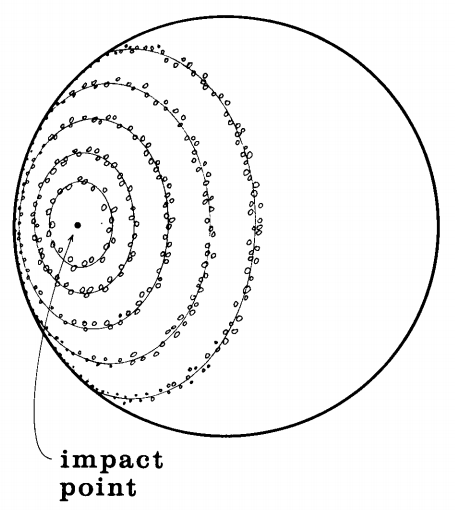
The number of new particle systems generated in each ring was based on the circumference of the ring and a controlling density parameter. New particle systems were spaced randomly around the ring. Particle systems overlapping others in the same or adjacent rings gave the ring a solid, continuous look.
The second-level particle systems began generating particles at varying times on the basis of their distance from the point of impact. By varying the starting times of the particle systems, the effect of an expanding wall of fire was produced.
The second-level particle systems were modeled to look like explosions. Figure 3 shows an example. The generation shape was a circle on the surface of the planet. Each particle system was oriented so that particles, generated at random positions within the circle, flew upward away from the planet’s surface. The initial direction of the particles’ movement was constrained by the system’s ejection angle to fall within the region bounded by the inverted cone shown in Figure 3. As particles flew upward, the gravity parameter pulled them back down to the planet’s surface, giving them a parabolic motion path. The number of particles generated per frame was based on the amount of screen area covered by the particle system.
The individual particle systems were not identical. Their average color and the rates at which the colors changed were inherited from the parent particle system, but varied stochastically. The initial mean velocity, generation circle radius, ejection angle, mean particle size, mean lifetime, mean particle generation rate, and mean particle transparency parameters were also based on their parent’s
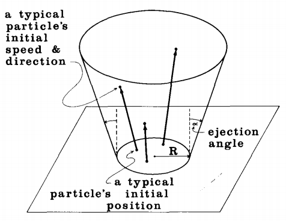
parameters, but varied stochastically. Varying the mean velocity parameter caused the explosions to be of different heights.
All particles generated by the second-level particle systems were predominately red in color with a touch of green. Recall from Section 2.5 that particles are treated as point light sources and that colors are added, not matted, into a pixel. When many particles covered a pixel, as was the case near the center and base of each explosion, the red component was quickly clamped at full intensity and the green component increased to a point where the resulting color was orange and even yellow. Thus, the heart of the explosion had a hot yellow-orange glow which faded off to shades of red elsewhere. Actually, a small blue component caused pixels covered by very many particles to appear white. The rate at which a particle’s color changed simulated the cooling of a glowing piece of some hypothetical material. The green and blue components dropped off quickly, and the red followed at a slower rate. Particles were killed when their lifetime expired, when their intensity fell below the minimum intensity parameter, or if they happened to fall below the surface of the planet.
A quickly moving object leaves a blurred image on the retina of the human eye. When a motion picture camera is used to film live action at 24 frames per second, the camera shutter typically remains open for 1/50 of a second. The image captured on a frame is actually an integration of approximately half the motion that occurred between successive frames. An object moving quickly appears blurred in the individual still frames. Computer animation has traditionally imaged scenes as individual instants in time and has ignored motion blur. The resulting motion often exhibits temporal aliasing and strobing effects that are disconcerting to the human eye. Motion blur is a complex topic that is beginning to appear in the literature [7, 12].
The particles in our wall-of-fire element are motion-blurred. Three-dimensional positions are calculated for a particle at the beginning of a frame and about halfway through the frame, and an antialiased straight line is drawn between the corresponding screen coordinate positions in the frame buffer.$ ^4 $ Antialiased lines are used to prevent staircasing (moving jaggies) and strobing (popping on and off) effects. To be perfectly correct, screen motion due to movement of the camera should be considered when calculating where to blur a particle. One can also argue that simulating the imperfect temporal sampling of a movie camera is not ideal and that motion blur should really simulate what happens in the human eye. This is a good area for future research.
In the finished sequence, the wall of fire spread over the surface of the planet both in front of and behind the planet’s limb (outer edge). The rendering algorithm generated two images per frame–one for all particles between the camera’s position and the silhouette plane of the planet, and one for all particles on the other side of this clipping plane. These two elements were composited with the barren moonlike planet element and the stars element in back-to-front order–stars, background fires, planet, and foreground fires.
Because the wall of fire was modeled using many small light-emitting particles, light from the fire should have reflected off the planet’s surface. Our current implementation of particle systems does not handle light reflection on surfacebased objects. To achieve this effect, Lucasfilm team member Tom Duff added an additional strong local light source above the center of the rings of fire when he rendered the planet’s surface. This produced the glow that circles the ring of fire on the planet’s surface. This glow is visible in Figure 5.)
Figure 4 is a frame showing the initial impact of the Genesis bomb. It was generated from one very large particle system and about 20 smaller ones about its base. About 25,000 particles exist in this image. Figure 5 occurs partway through the first half of the sequence. It contains about 200 particle systems and 75,000 particles. Figure 6 shows the ring of fire extending over and beyond the limb of the planet. It is formed from about 200 explosions and 85,000 particles. Figure 7 shows the wall of fire just before it engulfs the camera; in Figure 8 the camera is completely engulfed. Both employ about 400 particle systems and contain over 750,000 particles. The textures in Figure 8 are completely synthetic and yet have a “natural” and highly detailed appearance that is uncommon in most computer graphics images. These images are interesting statically, but they only really come alive on the movie screen. It is interesting to note that this is also the case for many of the best traditional (i.e., non-computer-generated) special effects shots where motion blur is an important factor.
A few points concerning random numbers are of interest from a production point of view. The random number routine we use is based on [6], and generates numbers uniformly in the range [0.0, 1.0]. It is an incremental algorithm based on updating a table of seed values. To checkpoint a production, all that need be saved is this random number table–we do not save all the parameters of 750,000 particles. To restart a computation at frame $ n $ , the closest preceding frame $ p $ is found that cannot contribute particles to frame $ n $ (this is determined from the lifetime parameters of all the active particle sysrtems). Frame $ p $ + 1’s random number table is then read, and particle generation can begin from there. No
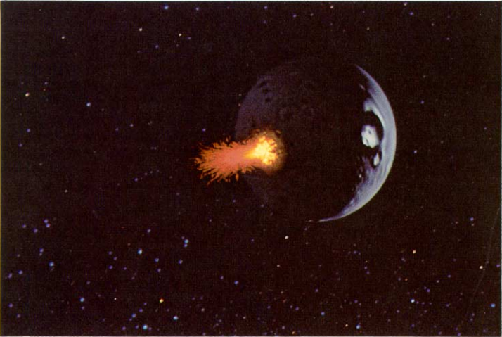
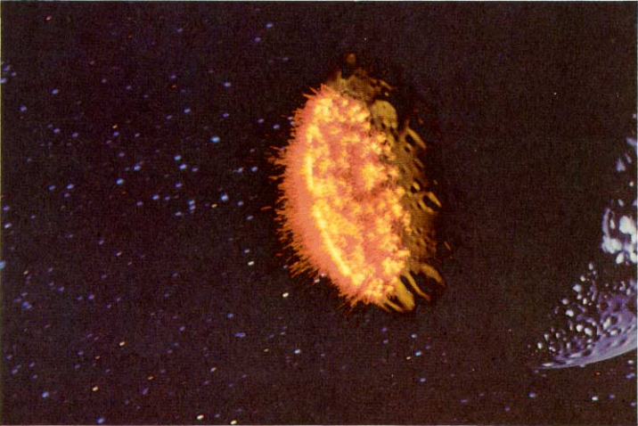
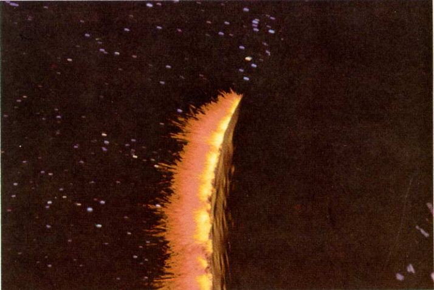
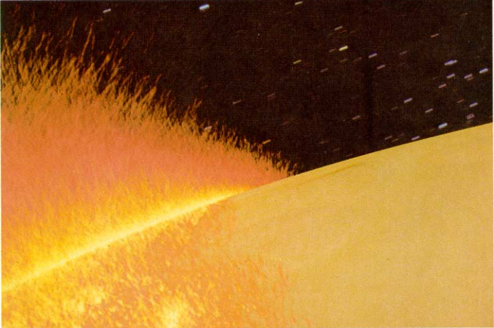
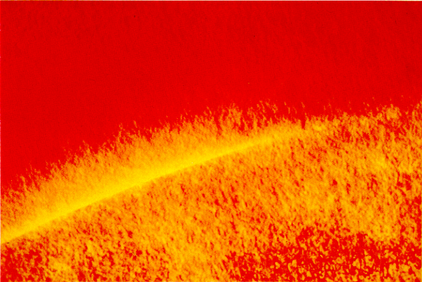
particles are drawn until the simulation reaches frame $ n $, so this backing up and restarting usually takes only a few minutes.
Particles moving off screen or being extinguished for any reason do not affect the randomness of other particles. This is because all stochastic decisions concerning a particle are performed when it is generated. After that, its motion is deterministic. If stochastic elements were to be used to perturbate the dynamics of a particle (e.g., to simulate turbulence), more care would have to be taken when checkpointing a frame and killing particles. In that case, it would probably be better to use a more deterministic and reproducible random number generator.
4. OTHER APPLICATIONS OF PARTICLE SYSTEMS
4.1 Fireworks
We are currently using particle systems to model fireworks. The fireworks differ from the Genesis Demo in that the control parameters of the particle systems vary more widely, and streaking is more predominate. Figure 9 shows two red explosions superimposed. One explosion is tall, thin, and near the end of its lifetime, and the other is short, fat, and building up to full steam. Figure 10 shows several green explosions dying off and blue spherical explosion starting up. Figure 11 contains overlapping, multicolored explosions formed with different generation shapes and ejection angles. Again, these images only really come alive when projected at 24 frames per second.
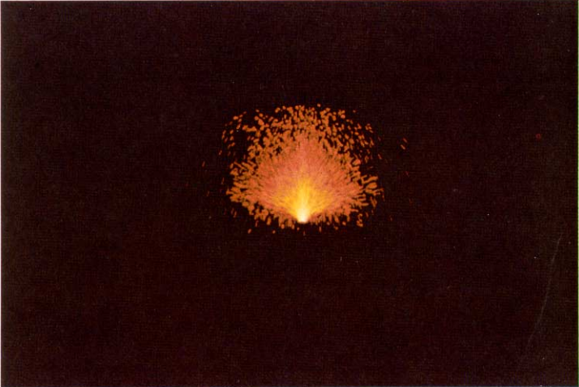
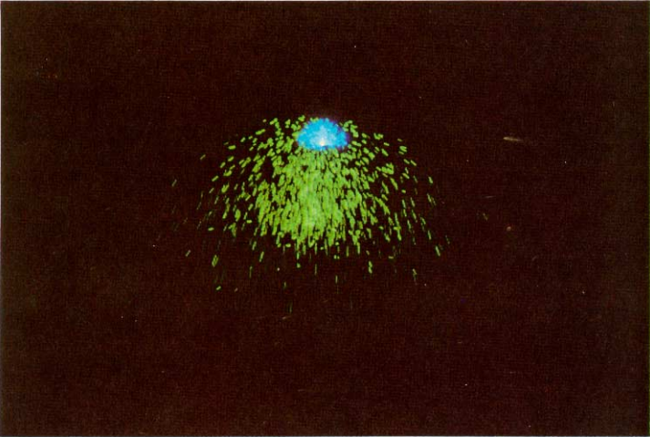
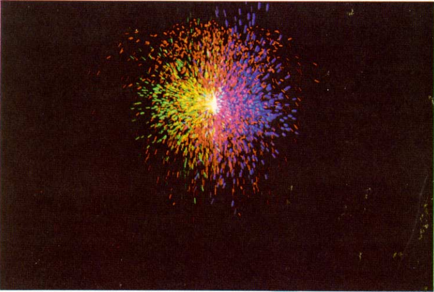
4.2 Line Drawing Explosions
Particle systems are being used to model exploding objects in a computer simulated tactical display for a scene from the movie Return of the Jedi [8]. In this case, the particle systems are implemented on a line-drawing display. In order to simulate motion blur, the particles are drawn as very small straight lines instead of as points. The texturing effects that are evident in the previous examples are lost on a line-drawing display, and yet the motion still looks real and the sequence gives the viewer the impression that something is exploding. This is because the model is dynamic–it moves well.
4.3 Grass
To model grass, we use an explosive type of particle system, similar to that used in the Genesis Effect. Instead of drawing particles as little streaks, the parabolic trajectory of each particle over its entire lifetime is drawn. Thus, the time-domain motion of the particle is used to make a static shape. Grasslike green and dark green colors are assigned to the particles which are shaded on the basis of the scene’s light sources. Each particle becomes a simple representation of a blade of grass and the particle system as a whole becomes a clump of grass. Particle systems randomly placed on a surface and overlapping one another are used to model a bed or patch of grass.
Figure 12 is a picture entitled white.sand by Alvy Ray Smith of Lucasfilm. The grass elements of this image were generated as described above. The plant
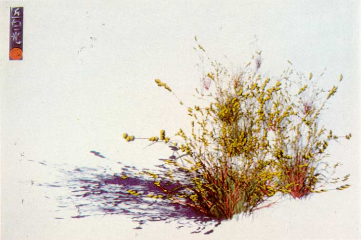
elements were generated using a partially stochastic technique similar to particle systems.
5. ONGOING RESEARCH IN PARTICLE SYSTEMS
A logical extension of this research will be to use particle systems to model fuzzy objects in which the individual particles can not be rendered as point light sources, but must be rendered as individual light-reflecting objects.
To this end, we have begun to investigate the modeling of clouds. Clouds are difficult for several reasons. First, the shape and form of clouds are complex, depending on many factors such as wind direction, temperature, terrain, and humidity. The atmospheric literature abounds with cloud models that are simple in concept but computationally difficult, since most are based on partial differential equations. Second, clouds are difficult because they can throw shadows on themselves. This property is very important in making a cloud look like a cloud. Third, the number of particles needed to model a cloud will be very large. This will require an efficient rendering algorithm.
8. CONCLUSIONS
We have presented particle systems, a method for the modeling of a class of fuzzy objects, and have shown how they were used in making the fire element of the Genesis Demo sequence for the movie Star Trek II: The Wrath of Khan. Particle systems have been used as a modeling tool for other effects and appear promising for the modeling of phenomena like clouds and smoke.
Particles, especially when modeled as point light sources or as streaks of light, have proved efficient to render–they are merely antialiased lines. Because they are so simple, they lend themselves to a hardware or firmware implementation. With a hardware antialiased line-drawing routine, the computation of our wall-of-fire element would have been two to three times faster.
Particle systems are procedural stochastic representations controlled by several global parameters. Stochastic representations are capable of producing minute detail without requiring substantial user design time. The textures in the fire sequence could not have been modeled with other existing methods. Fire images, scanned in from a photograph or painted, could have been texture mapped, but they would still have been static. Another advantage of a procedural representation is its ability to adapt to several different viewing environments. For example, procedural representations can generate only as much detail as is needed in a frame, potentially saving significant amounts of computation time.
Having finally come to grips with spatial aliasing, it is now time for computer image synthesis to being to investigate and solve temporal aliasing problems. The Genesis Demo is the first “big screen” computer-synthesized sequence to include three-dimensional dynamic motion blur. The particles in a particle system can easily be motion-blurred because they are so simple. A great deal of work remains to be done in this area–blurring particles is much easier than blurring curved surface patches.
Particle systems can model objects that explode, flow, splatter, puff up, and billow. These kinds of dynamics have not been produced with surface-based representations. The most important aspect of particle systems is that they move: good dynamics are quite often the key to making objects look real.
7. ACKNOWLEDGMENTS
The author gratefully acknowledges the suggestions and encouragement of all members of the graphics project at Lucasfilm Ltd, especially those who worked on the Genesis Demo sequence: Loren Carpenter, Ed Catmull, Pat Cole, Rob Cook, David DiFrancesco, Tom Duff, Rob Poor, Tom Porter, and Alvy Ray Smith. The crusade for motion blur and antialiasing in computer image synthesis is a goal of the entire graphics project and Lucasfilm as a whole. One of the referees deserves credit for pointing out several extensions and improvements to the motion blurring discussion. Finally, thanks to Ricki Blau for editorial and photographic assistance.
REFERENCES
- ABRAHAM, R., AND SHAW, C. DYNAMICS–The Geometry of Behavior. City on the Hill Press, Santa Cruz, Calif., 1981.
- BADLER, N. I., O’ROURKE, J., AND TOLTZIS, H. A spherical human body model for visualizing movement. Proc. IEEE 67, 10 (Oct. 1979).
- BLINN, J. F. Light reflection functions for simulation of clouds and dusty surfaces. Proc. SIGGRAPH ‘82. In Comput. Gr. 16, 3, (July 1982), 21-29.
- CsuaI, C., HACKATHORN, R., PARENT, R., CARLSON, W., AND HOWARD, M. Towards an interactive high visual complexity animation system. Proc. SIGGRAPH 79. In Comput. Gr. 13, 2 (Aug. 1979), 289-299.
- FOURNIER, A., FUSSEL, D., AND CARPENTER, L. Computer rendering of stochastic models. Commun. ACM25, 6, (June 1982), 371-384.
- KNUTH, D. E. The Art of Computer Programming, vol. 2. Addison-Wesley. Reading, Mass., (1969), p. 464.
- KOREIN, J., AND BADLER, N. I. Temporal anti-aliasing in computer generated animation. To appear in Proc. SIGGRAPH ‘83 (July 1983).
- LUCASFILM. Return of the Jedi (film), May 1983.
- NORTON, A. Generation and display of geometric fractals in 3-D. Proc. SIGGRAPH ‘82. In Comput. Gr. 16, 3 (July 1982), 61-67.
- PARAMOUNT. Star Trek II: The Wrath of Khan (film), June 1982.
- PBS. Carl Sagan’s Cosmos Series. (television series), Public Broadcasting System, 1980.
- POTMESIL, M., AND CHAKRAVARTY, I. Modeling motion blur in computer-generated images. To appear in Proc. SIGGRAPH ‘83 (July 1983).
- REQUICHA, A. A. G., AND VOELCKER, H. B. Solid modeling: A historical summary and comtemporary assessment. IEEE Comput. Gr. Appl. (March 1982).
- SMITH, A. R., CARPENTER, L., CATMULL, E., COLE, P., COOK, R., POOR, T.,PORTER, T. AND REEVES, W. Genesis Demo Documentary (film), June 1982, Lucasfilm Ltd.
$ ^1 $ In more detail, average red, green, and blue values are specified.
$ ^2 $ Note that this clipping is performed in modeling space–to a given plane for example. Clipping to the viewing frustum occurs later in the rendering stage and is discussed below.
$ ^3 $ Explosions and fire, the two fuzzy objects we have worked with the most, are modeled well with this assumption. Other fuzzy objects, such as clouds and water, are not. Section 5 discusses rendering algorithms for these objects.
$ ^4 $ A particle’s trajectory is actually parabolic, but the straight-line approximation has so far proved sufficient.
汉译
粒子系统：一种对一类模糊物体的建模技术
WILLIAM T. REEVES Lucasfilm Ltd
这篇论文介绍了粒子系统——一种对火焰、云彩和水等模糊物体的建模方法。粒子系统将物体建模为定义了体积的原始粒子团。在一段时间内，粒子在系统中生成，在系统中移动和改变形态，并在系统中销毁。这种生成的模型能够表示运动、形态变化和动力学特征，而这些正是经典的基于表面表示方法所不能表现的。粒子很容易运动模糊，因此不会出现时态混叠和残影。粒子系统中的许多粒子是用随机过程来生成和控制的。文章还介绍了粒子系统在电影《星际迷航II：可汗之怒》[10] 的“创世纪演示”镜头序列中火墙的应用。
分类和主题描述：I.3.3 [计算机图形学]: 图片/图像生成; I.3.5 [计算机图形学]: 计算几何与物体建模; I.3.7 [计算机图形学]: 三维图形与仿真技术
一般术语：算法, 设计
附加关键字词：运动模糊, 随机建模, 时态混叠, 动态对象
1.简介
事实证明，用现有的计算机图像合成技术很难对云、烟、水和火等现象进行建模。这些“模糊”物体没有平滑、清晰且有光泽的表面；相反，它们的表面是不规则的、复杂且不清晰的。我们关注它们在形状和外观上的动态和流动变化。它们不是刚性物体，也不能用计算机图形学中常见的简单仿射变换来描述它们的运动。
本文提出了一种模糊物体的建模方法，我们称之为粒子系统。粒子系统的表示方法与图像合成中通常使用的表示方法在三个基本方面有所不同。首先，物体不是由定义了边界的一组基本曲面元素（如多边形或面片）表示，而是由定义了体积的基本粒子团表示。其次，粒子系统不是静态实体。它的粒子随着时间的推移而改变形态和移动。新的粒子“出生”，旧的粒子“死亡”。最后，由粒子系统表示的对象是不确定的，因为它的形状和形态没有完全确定。相反，一个物体的形状和外观是由随机过程来创建和改变的。
在模糊对象建模中，粒子系统比传统的面向曲面技术有几个重要的优点。首先，粒子（现在我们将粒子视为三维空间中的一个点）是比多边形（最简单的曲面表示形式）简单得多的基本图元。因此，在相同的计算时间内，可以处理更多的基本图元并生成更复杂的图像。因为粒子很简单，所以也很容易运动模糊。迄今为止，在计算机图像合成中，为消除时态混叠效应而对快速运动物体进行的运动模糊在很大程度上被人们忽略了。其次，模型定义是程序性的，并由随机数控制。因此，获得一个非常精致的模型并不一定需要大量的人工设计时间，现有的基于表面的系统通常就是这样。因为它是程序性的，粒子系统可以调整其细节级别以适配一组特定的观察参数。与分形曲面[5]一样，缩放在粒子系统中可以显示越来越多的细节。最后，粒子系统为“活着”的物体对象建模，也就是说它们在一段时间内会改变形状。使用基于曲面的建模技术很难表示这种形式的复杂动力学特征。
将物体对象建模为粒子集合并不是一个新点子。15年前，最早的电脑游戏用屏幕上布满的许多发光的小点描绘了爆炸的宇宙飞船。在许多三维建模系统（例如早期的Evans和Sutherland飞行模拟器）中，点源被用作图形数据类型——尽管文献中很少有对它们的真正引用。俄亥俄州立大学的Roger Wilson[4]用粒子模拟出了从烟囱中冒出的烟雾。他的模型既没有使用随机控制，也没有动力学内容。Alvy Ray Smith和Jim Blinn在Cosmos系列节目中使用粒子来模拟星系中恒星的产生和死亡[11]。Alan Norton[9]使用粒子生成并显示三维分形形状。Jim Blinn[3]讨论了模拟光线通过粒子层和被粒子层反射的光反射函数。他的技术被用来制作土星光环的图像。Blinn没有解决模糊物体建模问题，而这正是本文的主题。体积表示法也被认为是曲面表示法的可行替代方法。实体建模[13]是体积表示法的一种形式，Norm Badler和Joe O’Rourke在“bubbleman”[2]中的工作也是如此。随机建模的使用将我们的工作与分形建模的最新进展联系起来[5]。
第2节更详细地描述了粒子系统的基本框架。第3节探讨了在电影《星际迷航II：可汗之怒》的“创世纪演示”镜头序列中，粒子系统是如何被用来产生火焰的[10]。第4节介绍了粒子系统的几个其他应用，第5节讨论了该领域正在进行的和未来的研究。
2.粒子系统的基本模型
粒子系统是许多微小粒子的集合，它们共同代表一个模糊的物体对象。在一段时间内，在系统中生成，在系统中移动和变化，然后在系统中销毁。
计算运动序列中的每个帧，需要执行以下步骤：（1）新粒子被生成到系统中，（2）每个新粒子都被指定其各自的属性，（3）系统中存在的超过规定寿命的任何粒子都会被销毁，（4）剩余的粒子将根据其动力学属性进行移动和变换，最后（5）在帧缓冲区中渲染活动粒子的图像。粒子系统可以经过编程，使其在每一步执行任何一组指令。因为它是程序性的，所以这种方法可以结合任何描述物体外观或动力学的计算模型。例如，粒子的运动和变换可以与偏微分方程组的解联系在一起，或者粒子属性可以根据统计力学指定。因此，我们可以利用其他科学或工程学科开发的模型。
在这里介绍的研究中，我们使用简单的随机过程作为生成帧的每个步骤的程序性要素。要控制粒子系统中粒子的形状、外观和动力学特征，模型设计者会用到一组参数。随机选择每个粒子的外观和运动的随机过程会受到这些参数的约束。通常，每个参数都用来指定粒子的属性值必须位于的范围。我们通常使用平均值和最大方差来指定这些范围。
以下小节更详细地描述了粒子系统的基本模型，以及如何在我们编写的软件中控制和指定它们。
2.1 粒子生成
粒子在粒子系统中通过受控随机过程生成。该过程确定在每个时间间隔（即在给定帧）内进入系统的粒子数。生成的粒子数很重要，因为它强烈影响模糊物体对象的密度。
模型设计者可以选择以下两种方式来控制新粒子的数量。在第一种方法中，设计者控制在一帧上生成的粒子的平均数量及其方差。在帧$ f $上生成的实际粒子数为
$$ NParts_f = MeanParts_f + Rand() \times VarParts_f, $$
其中，$ Rand $是一个程序过程，返回一个在-1.0和+1.0之间均匀分布的随机数，$ MeanParts_f $是粒子的平均数，$ VarParts_f $是其方差。
在第二种方法中，新粒子的数量取决于物体对象的屏幕画面大小。模型设计者控制每单位屏幕面积生成的粒子平均数及其方差。程序化粒子系统可以确定特定帧的视图参数，计算其覆盖的大致屏幕区域，并相应地设置新粒子的数量。相应的方程为
$$ NParts_f = (MeanParts_{sa_f} + Rand() \times VarParts_{sa_f}) \times ScreenArea, $$
其中，$MeanParts_{sa}$是每单位屏幕面积粒子数的平均值，$VarParts_{sa_f}$是其方差，$ScreenArea$是粒子系统的屏幕面积。这个方法控制粒子系统的细节级别，从而控制渲染其图像所需的时间。例如，我们没必要在屏幕上占用4个像素的物体对象中生成100000个粒子。
为了使粒子系统在强度上增长或收缩，设计者可以随时间去改变每帧生成的粒子的平均数量（即，$MeanParts_f$和$MeanParts_{sa_f}$是如上所述的帧数函数）。目前，我们使用一个简单的线性函数
$$ MeanParts_f = InitialMeanParts + DeltaMeanParts \times (f - f_0) $$
或者
$$ MeanParts_{sa_f} = InitialMeanParts_{sa} + DeltaMeanParts_{sa} \times (f - f_0), $$
其中，$f$是当前帧，$f_0$是粒子系统处于活动状态的第一帧，$InitialMeans$表示该第一帧的粒子平均数，$VarParts_{sa_f}$表示其变化率。方差约束量$VarParts_f$和$VarParts_{sa_f}$目前在所有帧上都是恒定的。更复杂的二次型，
三次型，甚至随机变化在均值和方差参数中都很容易添加。
因此，为了控制粒子系统的粒子生成，设计者指定$f_0$和参数$InitialMeanParts$、$DeltaMeanParts$和$VarParts$，或参数$InitialMeanParts_{sa}$、$DeltaMeanParts_{sa}$和$VarParts_{sa}$。
2.2 粒子属性
对于生成的每个新粒子，粒子系统必须确定以下属性的值：
（1） 初始位置，
（2） 初始速度（速率和方向），
（3） 初始大小，
（4） 初始颜色，
（5） 初始透明度，
（6） 形状，
（7） 粒子寿命。
粒子系统的几个参数控制着粒子的初始位置。粒子系统在三维空间中有一个定义其原点的位置。通过原点绕坐标系旋转的两个角度得出其方向。粒子系统也有一个生成形状，该形状定义了一个关于其原点的区域，新生粒子随机放置在该区域中。我们实现的生成形状包括：半径为$r$的球体、以$x-y$平面作为其坐标系的半径为$r$的圆，以及以$x-y$平面作为其坐标系的长度为$l$、宽度为$w$的矩形。图1展示了球形生成形状的典型粒子系统。基于自然规律或混沌吸引子[1]的更复杂的生成形状已经被设想出来，但尚未实现。
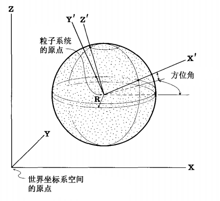
粒子系统的生成形状还描述了新粒子移动的初始方向。在球形生成形状中，粒子从粒子系统的原点向外移动。在圆形或矩形形状中，粒子从$x-y$平面向上移动，但允许根据另一个参数——“放射”角度——改变垂直方向（见图3）。粒子的初始速度由
$$ InitialSpeed = MeanSpeed + Rand() \times VarSpeed, $$
所决定，其中，$MeanSpeed$和$VarSpeed$是粒子系统的另外两个参数，即平均速度及其方差。
要确定粒子的初始颜色，粒子系统需要获得平均颜色$^1$以及与该颜色的最大偏差。粒子透明度和粒子大小也由平均值和最大变化范围决定。这些方程与上面给出的初速度方程相似。
粒子系统有一个参数，用于指定它生成的每个粒子的形状。目前已实现的粒子形状有球形、矩形和条纹球形。后者用于运动模糊化粒子——这是为快速移动的物体对象建模时的一个非常重要的特性。我们将在第2.5节和第3节中详细讨论条纹粒子。
可能的属性控制参数及其变体的数量是无穷无尽的。我们正在展示我们发现最有用和最有趣的东西。
2.3 粒子动力学
粒子系统中的单个粒子在三维空间中移动，并且颜色、透明度和大小也会随时间而变化。
要将粒子从一帧移动到下一帧，只需将其速度向量加到位置向量即可。为了增加复杂性，粒子系统还使用加速度在帧与帧之间修改粒子的速度。使用这个参数，模型设计者可以模拟重力，并使粒子以抛物线而不是直线移动。
粒子的颜色随时间变化是由“颜色变化率”参数所规定的。粒子的透明度和大小以完全相同的方式控制。在我们的实现中，这些变化率对于粒子系统中的所有粒子来说都是全局的，但是我们也可以很容易地想到将这个参数变成随机的。
2.4 粒子销毁
生成粒子时，粒子的寿命以帧为单位。随着每一帧的计算，粒子的寿命将逐渐减少。当粒子的寿命为零时，它就会被销毁。
只要粒子对图像没有任何贡献，那么其他机制也可以用来规划粒子的销毁。如果根据颜色和透明度计算的粒子强度低于指定阈值，则该粒子将被销毁。从其父粒子系统原点沿指定方向移动超过指定距离的粒子也可能被销毁。这种机制可以用来去除在关注区域之外的粒子。$ ^2 $
2.5 粒子渲染
一旦为一帧计算了所有粒子的位置和外观参数，渲染算法就会生成一张图片。一般的粒子渲染问题与由更常见的图元（如多边形和曲面）组成的物体对象的渲染一样复杂。粒子可以在屏幕深度上遮挡其后面的其他粒子。它们可以是透明的，并且可以在其他粒子上投射阴影。此外，粒子可以与基于曲面的基本体建模的物体对象共存于场景中，并且这些物体对象可以与粒子相交。
在我们现有的系统中，两个假设允许我们去简化渲染算法。首先，我们假设粒子系统不与其他基于曲面的建模基本体相交，因此我们的渲染算法只需要处理粒子。使用其他技术建模的对象将在渲染后的合成阶段与粒子系统对象合成在一起。为了使粒子系统相交或位于其他物体对象后面，渲染系统将基于在模型坐标空间中定义的剪裁平面将粒子系统的图像分割为子图像，然后在合成阶段将这些子图像与其他图像组合。
在我们当前的渲染系统中，另一个简化的假设是每个粒子都可以作为点光源。有了这个假设，隐藏曲面的确定不再是一个问题。每个粒子都会为其占有的像素添加一点光强。一个粒子后面的另一个粒子不会被遮挡，而是会为覆盖的像素添加更多光强。添加的光强及其颜色取决于粒子的透明度和颜色。目前，添加的光强并不取决于粒子和观察位置之间的距离，但这是一个简单的扩展。观察变换、粒子大小及其形状决定了覆盖哪些像素。所有粒子形状都被绘制为抗锯齿，以防止时态混叠和残影。光线可能会被许多粒子添加到像素中，因此渲染算法会将单个的红色、绿色和蓝色强度钳制在帧缓冲区的最大强度值处，而不是让它们任意扩超。
使用这种算法和假设，我们不需要对粒子进行排序。它们以任意生成顺序渲染到帧缓冲区。阴影生成不再是一个难题，因为粒子不反射光而是发光。
2.6 粒子层级
我们的系统有一个支持粒子系统层次结构的形成和控制的机制。模型设计者创建一个粒子系统，其中粒子本身就是粒子系统。当父粒子系统发生变换时，其所有子粒子系统及其粒子也会发生变换。父粒子系统的平均颜色及其方差用于使用前面介绍的相同方程式选择子粒子系统的平均颜色和方差。一帧中生成的新粒子系统的数量基于父粒子的粒子生成速率。父对象的其他参数同样会影响其子对象的参数。用于表示层次结构的数据结构是树。
层次结构可以用于对由多个粒子系统组成的复杂模糊物体对象进行全局控制。例如，一朵云可能由许多粒子系统组成，每个粒子系统表示一个水粒子的翻滚区域。父粒子系统可以将这些粒子组合在一起，并控制受风和地形影响的云的全局运动和外观。
3. 使用粒子系统为一面火墙和爆炸效果建模
电影《星际迷航II：可汗之怒》[10]中的“创世纪演示”镜头序列[14]由卢卡斯电影有限公司的计算机图形项目生成。这一镜头序列描绘了一个名为“创世纪炸弹”的实验装置将一颗死亡的、类似月球表面的行星转变为一颗温暖的、类似地球表面的行星。在一次计算机模拟演示中，炸弹击中了行星表面，一道不断扩大的火墙从撞击点向外蔓延，最终“清洗”了整个行星。行星表面开始弯曲，山脉生长，海洋、植被和大气形成了一个类似地球的环境。
“创世纪演示”中的火墙是使用粒子系统的两级层次结构生成的。顶层粒子系统集中在“创世纪炸弹”的撞击点。它产生的粒子本身就是粒子系统。图2展示了这些次级粒子系统的位置，以及它们如何在行星表面形成不断膨胀的同心环。
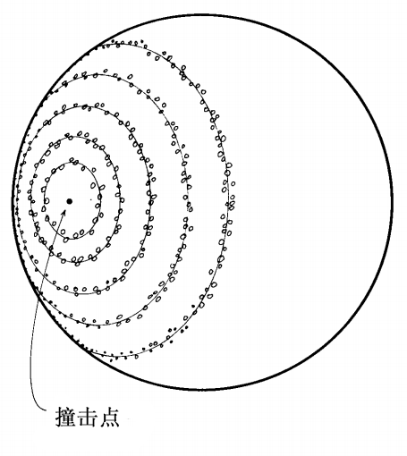
每个环中生成的新粒子系统的数量基于环的周长和一个密度控制参数。新的粒子系统在环周围随机分布。在相同或相邻的环中重叠的粒子系统让环表现出坚实、连续的外观。
次级粒子系统根据它们与撞击点的距离，在不同的时间开始产生粒子。通过改变粒子系统的起始时间，产生了膨胀的火墙效果。
次级粒子系统被模拟成爆炸的形态。图3展示了一个示例。生成的形状是行星表面的一个环。在环内任意位置产生的粒子向上飞离行星表面，这同时也是所有粒子系统的方向。粒子运动的初始方向受到系统放射角的限制，落在图3所示的倒锥体所限定的区域内。当粒子向上飞行时，重力参数将它们拉回到行星表面，给它们一条抛物线运动路径。每帧生成的粒子数基于粒子系统覆盖的屏幕面积。
每个粒子系统并不完全相同。它们的平均颜色和颜色变化率是从父粒子系统继承的，但会随机变化。初始平均速度、生成圆半径、放射角、平均粒子大小、平均寿命、平均粒子生成率和平均粒子透明度参数也基于其父
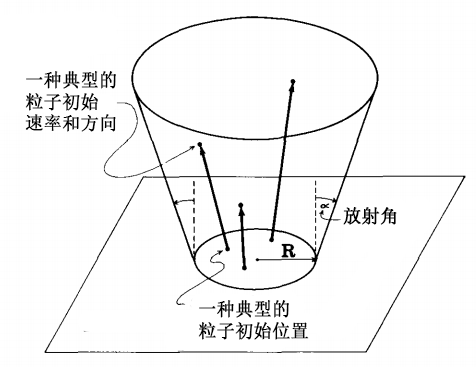
参数，但也会随机变化。改变平均速度参数会导致爆炸的高度不同。
次级粒子系统产生的所有粒子主要是红色，带有一丝绿色。回想一下第2.5节，粒子被视为点光源，颜色被添加到像素中，而不是无光。当许多粒子覆盖一个像素时，就像每次爆炸的中心和底部附近的情况一样，红色分量迅速增加到最大强度并被钳制，绿色分量增加到最终像素颜色为橙色甚至黄色。因此，爆炸的中心有一道炽热的黄橙色光芒，在其他地方褪为红色。事实上，一个小的蓝色分量会导致被很多粒子覆盖的像素看起来是白色的。粒子颜色变化的速率可以模拟某个假设材料热发光部分的冷却。绿色和蓝色分量很快就消失了，而红色分量则以较慢的速度消失。当粒子的寿命耗尽、强度低于最小强度参数或恰好落在行星表面以下时，粒子就被销毁。
快速移动的物体会在人眼视网膜上留下模糊的图像。当使用电影摄影机以每秒24帧的速度拍摄实景时，摄影机快门通常会保持打开状态1/50秒。在一帧上捕获的图像实际上是连续帧之间发生的大约一半运动的混合。快速移动的物体对象在单独的静止帧中表现出模糊效果。传统上，计算机动画将场景成像为时间上的单个瞬间，并忽略了运动模糊。由此产生的运动通常表现出时态混叠和残影效果，这让人眼感到不真实。运动模糊是一个复杂的话题，并已经开始出现在文献[7,12]中。
火墙中的粒子是运动模糊的。粒子的三维位置是在帧开始处和帧中间计算的，抗锯齿直线是在帧缓冲区中相应的屏幕坐标位置之间绘制的。$ ^4 $抗锯齿直线用于防止阶梯效应（移动锯齿）和残影（突然出现和消失）效果。为了确保完全正确，在计算模糊粒子的位置时，应该考虑由于摄像机移动而导致的屏幕运动。但我们还可以认为模拟电影摄影机不完美的时间采样其实是并不理想的，因为运动模糊应该真正模拟人眼中发生的事情。这是未来一个很好的研究领域。
在完成的镜头序列中，火墙在行星边缘（外边缘）的前方和后方蔓延到行星表面。渲染算法每帧生成两幅图像——一幅用于摄像机位置和行星轮廓平面之间的所有粒子，另一幅用于该剪裁平面另一侧的所有粒子。这两种元素是由如同月球般贫瘠的行星元素和恒星元素按从后到前的顺序组合而成的——恒星、背景火焰、行星和前景火焰。
因为火墙是用许多发光的小粒子模拟的，所以火发出的光应该从行星表面反射出来。我们目前对粒子系统的实现不处理基于表面的物体对象上的光反射。为了达到这种效果，卢卡斯电影团队成员Tom Duff在渲染行星表面时，在火环中心上方添加了一个额外的强局部光源。这产生了环绕行星表面火环的辉光。（在图5中可以看到这种辉光。）
图4是展示“创世纪炸弹”初始撞击的一帧图像。它是由一个非常大的粒子系统和大约20个较小的粒子系统产生的。这张图片中大约有25000个粒子。图5出现在镜头序列的前半部分。它包含大约200个粒子系统和75000个粒子。图6展示了延伸到行星边缘的火环。它由大约200次爆炸和85000个粒子组成。图7展示了火焰吞噬摄像机前的火墙；在图8中，摄像机被完全吞没。两者都采用了大约400个粒子系统，包含超过75万个粒子。图8中的纹理是完全合成的，但具有“自然”和非常细致的外观，这在大多数计算机图形图像中并不常见。这些图像在静态上很有趣，但它们只有在电影屏幕上才能真正生动起来。有趣的是，对于许多最好的传统（即非计算机生成的）特效镜头，运动模糊也是一个重要因素。
从生产的角度来看，关于随机数的几个点很有趣。我们使用的随机数例程基于[6]，并在[0.0,1.0]范围内统一生成数字。这是一种基于更新种子值表的增量算法。在存档生产数据时，只需要保存这个随机数表——我们不保存750000个粒子的所有参数。要在帧$n$处重新开始计算，我们会发现最接近的前一帧$p$无法为帧$n$贡献粒子（这是由所有活动粒子系统的寿命参数所确定）。读取帧$p$+1的随机数表，粒子生成则可以从那里开始。
在模拟到达第$n$帧之前，不会绘制任何粒子，因此备份和重新开始通常只需几分钟。
粒子离开屏幕或因任何原因被销毁不会影响其他粒子的随机性。这是因为所有关于粒子的随机决策都是在粒子生成时执行的。在那之后，它的运动是确定的。如果要使用随机因素扰动粒子的动力学特征（例如，模拟湍流），则在存档每一帧和销毁粒子时必须更加小心。在这种情况下，最好使用更具确定性和可复制性的随机数生成器。
4. 粒子系统的其他应用
4.1 烟花
我们目前正在使用粒子系统来模拟烟花。烟花与“创世纪演示”的不同之处在于粒子系统的控制参数变化更大，条纹更占主导地位。图9展示了两个叠加的红色爆炸。一次爆炸高耸且稀疏，接近其寿命终点，另一次爆炸又矮小且饱满，并且正在形成完全的蒸汽。图10展示了几个绿色爆炸的消逝，蓝色球形爆炸的开始。图11包含了不同生成形状和放射角形成的重叠多彩爆炸。同样，这些图像只有在以每秒24帧的速度投影时才会真正生动表现出来。
4.2 线条爆炸
粒子系统被用于在计算机模拟的战术显像中模拟爆炸物体，以拍摄电影《绝地归来》[8]中的一个场景。在这种情况下，粒子系统在线条显像上实现。为了模拟运动模糊，粒子被绘制为非常小的直线，而不是点。在前面的例子中明显的纹理效果在一个线条显像上却消失了，但运动看起来仍然是真实的，这些镜头序列给观众的印象是有东西在爆炸。这是因为模型是动态的——它运动得十分恰当。
草
为了模拟草，我们使用了一种爆炸性的粒子系统，类似于“创世纪演示”效果中使用的粒子系统。我们不是将粒子绘制为小条纹，而是绘制每个粒子在其整个寿命内的抛物线轨迹。因此，粒子的时域运动用于生成静态形状。类草绿色和深绿色被指定给基于场景光源进行着色的粒子。每个粒子都成为一片草叶的简单表示，粒子系统作为一个整体而成为一团草。粒子系统随机放置在一个表面上，彼此重叠，用于模拟一个草床或一小块草。
图12是一幅名为《白·沙》的图片，由卢卡斯电影公司的Alvy Ray Smith创作。该图像的草如上所述生成。
图中的植物是使用类似于粒子系统的部分随机技术生成的。
5. 正在进行的粒子系统研究
这项研究的一个逻辑扩展将是使用粒子系统对模糊物体对象建模，其中单个粒子不能渲染为点光源，但必须渲染为单个光反射对象。
为此，我们已经开始研究云的建模。云之所以难以模拟，有几个原因。首先，云的形状和形态是复杂的，取决于许多因素，如风向、温度、地形和湿度。气象学文献中有大量概念简单但计算困难的云模型，因为大多数模型都基于偏微分方程。其次，模拟云是困难的，因为它们可以在自己身上投下阴影。这个属性在使云看起来像云时非常重要。最后，为云建模所需的粒子数量将非常大。这需要一个高效的渲染算法。
8. 结论
我们介绍了粒子系统，这是一种对一类模糊物体对象建模的方法，并展示了它们如何用于制作电影《星际迷航II：可汗之怒》的“创世纪演示”镜头序列中的火墙。粒子系统已被用作其他效果的建模工具，并有望用于云和烟等现象的建模。
粒子，尤其是当建模为点光源或光条纹时，已被证明能够有效地进行渲染——虽然它们纯粹是抗锯齿线。正因为它们非常简单，所以适合于用硬件或固件实现。使用硬件抗锯齿线绘制例程，我们的火墙模拟的计算速度将提高两到三倍。
粒子系统由几个全局参数控制的程序随机表示。随机表示能够在不需要大量用户设计时间的情况下产生微小的细节。火焰镜头序列中的纹理无法用其他现有方法建模。从照片中扫描或绘制的火焰图像可以是纹理贴图，但它们仍然是静态的。程序表示法的另一个优点是它能够适应几种不同的观察环境。例如，程序表示可以只生成帧中所需的细节，这会节省大量的计算时间。
在最终掌握了空间混叠之后，现在是计算机图像合成研究和解决时态混叠问题的时候了。“创世纪演示”是第一个包含三维动态运动模糊的“大屏幕”计算机合成镜头序列。粒子系统中的粒子很容易被运动模糊，因为它们非常简单。在这方面还有很多工作要做——模糊粒子比模糊曲面面片容易得多。
粒子系统可以为爆炸、流动、飞溅、膨胀和翻滚的物体对象建模。这些类型的动力学特征并不是用基于表面的表示方法产生的。粒子系统最重要的方面是它们的运动：良好的动力学特征通常是使物体看起来真实的关键。
7.鸣谢
作者衷心感谢卢卡斯电影有限公司图形项目所有成员的建议和鼓励，尤其是那些参与“创世纪演示”的成员：Loren Carpenter, Ed Catmull, Pat Cole, Rob Cook, David DiFrancesco, Tom Duff, Rob Poor, Tom Porter, 以及 Alvy Ray Smith。计算机图像合成中的运动模糊和抗锯齿是整个图形项目和卢卡斯电影的目标。其中一位审阅人指出了对运动模糊讨论的几个扩展和改进，作者对此表示十分欢迎。最后，感谢Ricki Blau的编辑和摄影帮助。
参考文献
- ABRAHAM, R., AND SHAW, C. DYNAMICS–The Geometry of Behavior. City on the Hill Press, Santa Cruz, Calif., 1981.
- BADLER, N. I., O’ROURKE, J., AND TOLTZIS, H. A spherical human body model for visualizing movement. Proc. IEEE 67, 10 (Oct. 1979).
- BLINN, J. F. Light reflection functions for simulation of clouds and dusty surfaces. Proc. SIGGRAPH ‘82. In Comput. Gr. 16, 3, (July 1982), 21-29.
- CsuaI, C., HACKATHORN, R., PARENT, R., CARLSON, W., AND HOWARD, M. Towards an interactive high visual complexity animation system. Proc. SIGGRAPH 79. In Comput. Gr. 13, 2 (Aug. 1979), 289-299.
- FOURNIER, A., FUSSEL, D., AND CARPENTER, L. Computer rendering of stochastic models. Commun. ACM25, 6, (June 1982), 371-384.
- KNUTH, D. E. The Art of Computer Programming, vol. 2. Addison-Wesley. Reading, Mass., (1969), p. 464.
- KOREIN, J., AND BADLER, N. I. Temporal anti-aliasing in computer generated animation. To appear in Proc. SIGGRAPH ‘83 (July 1983).
- LUCASFILM. Return of the Jedi (film), May 1983.
- NORTON, A. Generation and display of geometric fractals in 3-D. Proc. SIGGRAPH ‘82. In Comput. Gr. 16, 3 (July 1982), 61-67.
- PARAMOUNT. Star Trek II: The Wrath of Khan (film), June 1982.
- PBS. Carl Sagan’s Cosmos Series. (television series), Public Broadcasting System, 1980.
- POTMESIL, M., AND CHAKRAVARTY, I. Modeling motion blur in computer-generated images. To appear in Proc. SIGGRAPH ‘83 (July 1983).
- REQUICHA, A. A. G., AND VOELCKER, H. B. Solid modeling: A historical summary and comtemporary assessment. IEEE Comput. Gr. Appl. (March 1982).
- SMITH, A. R., CARPENTER, L., CATMULL, E., COLE, P., COOK, R., POOR, T.,PORTER, T. AND REEVES, W. Genesis Demo Documentary (film), June 1982, Lucasfilm Ltd.
$ ^1 $ 更详细地说，这里指定了红色、绿色和蓝色的平均值。
$ ^2 $ 请注意，此剪裁是在建模空间中执行的，例如在给定平面上。剪切到视锥体的操作将在渲染阶段的后期进行，将在下面进行讨论。
$ ^3 $ 爆炸和火焰，这两个我们处理得最多的模糊物体，在这个假设下得到了很好的建模。其他模糊对象，如云和水，则不是。第5节讨论了这些对象的渲染算法。
$ ^4 $ 粒子的轨迹实际上是抛物线的，但到目前为止，直线近似已被证明是足够的。